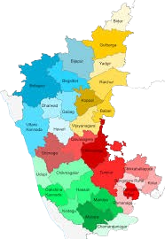

| Name: | Karnataka |
|---|---|
| Capital: | Bengaluru |
| Language: | Kannada |
| Chief Minister: | Siddaramaiah |
| Total Districts: | 31 |
| Population: | ~61 million (as per 2011 census) |
| Formation: | 1 November 1956 (Karnataka Rajyotsava) |
| Area: | 191,791 km² (6th largest in India) |
| Borders: | Goa, Maharashtra, Telangana, Andhra Pradesh, Tamil Nadu, Kerala, Arabian Sea |
| Coastline: | ~320 km along the Arabian Sea |
Know more